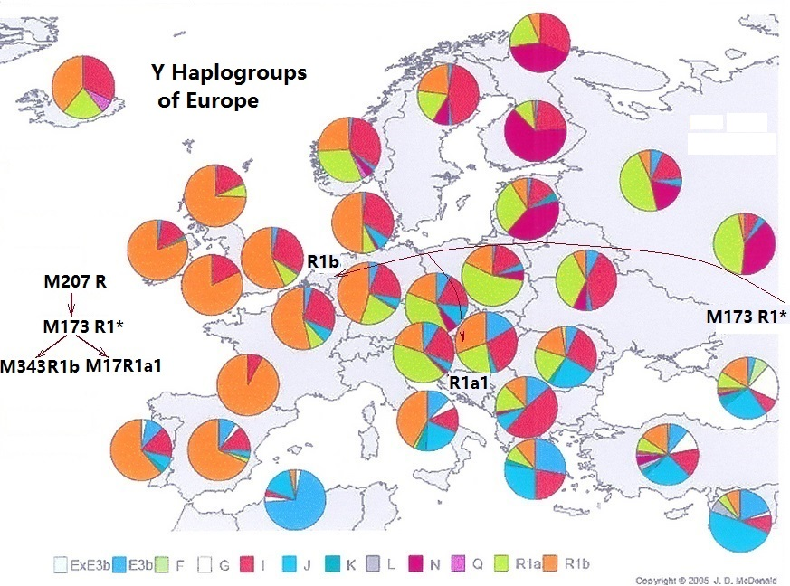

|
Back to Homepage
Part 2- Looking for Scientific Adam and Scientific Eve
Page1 Looking for the Y-Chromosome Adam
The code within the human blood:
In China, it has long been recognized that genetic relationships between parents and children lies in the blood. A traditional Chinese opera titled as "Three Drops of Blood " had a story that goes like this: Around two hundred years ago, a Chinese magistrate, in his attempt to identify the parent-child relationship introduced a "father and son each drip their blood into a bowl of water" method. He believes that if it ’s a true father-son relationship, their blood can mix together.This resulted in the separation of the father and his true son by birth. Obviously this is an example of how this concept could fail if applied improperly.
In the beginning of the last century, an Austrian doctor, Karl Landsteiner discovered that human blood have A, B, O, AB four types. And he established the formula for blood type inheritance and his effort won him the Nobel Prize in 1930. This was the first recognition by scientific methods that human blood contains genetic relationships. After the discovery of DNA, our understanding of human genetic inheritance took further step forward. A DNA-based paternity testing method began to be established.
1. Approaching from Paternity test methods:
 Figure 2-1 DNA relationship between parents and children Figure 2-1 DNA relationship between parents and children
What is the DNA relationship between parent and child? The cells in the human body contain similar DNA( deoxyribonucleic acid), the carrier of genetic information. Human DNA almost exclusively resides within the nucleus. Within the nucleus, the genetic information resides within the chromosomes. There are 23 pairs of chromosomes (or a total of 46) in human cells. Chromosomes can be divided into two different types, namely autosomes and sex chromosomes. In every cell, there are 22 pairs of autosomes (one from the father and one from the mother) and one pair of sex chromosomes. In a girl, her sex chromosomes will be XX, one from each parent. In a boy, the sex chromosomes will be XY with the Y chromosome for the father and the X chromosome from the mother.
.
Currently, there are three methods for paternity testing:
1)Autosomal paternity testing: Since half of the autosomal chromosomes come from the father and half from the mother, it is possible to determine the parents of the child with the Autosomal Testing method.
2)Y-chromosomal paternity test: This test focuses the determination of parentage in the male line only. But the Y-Chromosome identification not only makes it possible to identify the parent-child relationship, but also, it could identify more distant patrilineal relationship.
3)Mitochondrial paternity testing: Within the cytoplasm outside of the nucleus, lies the mitochondrial DNA (mtDNA). The mtDNA has the maternally inherited markers and is passed from the mother to the daughter. In its heritage, there are small changes, and so it can be used as identification of matrilineal relationship.

Figure 2-2 DNA three-dimensional structure
2. DNA Information
In 1953, American biologist, James Watson, and the British biologist, Francis Crick discovered the double-helix structure of DNA thus opening up the “mystery of life”. This monumental discovery transformed research in genetics into the molecular level. Using DNA from ones body, one can determine the genetic information and the secrets of inheritance. Moreover, this discovery forms the foundation for molecular anthropology.
DNA can be used expressed in the form of character code, much like the blood types A, B, O, AB.
The diagram shows the structure of the DNA (deoxyribonucleic acid) double helix with two long biopolymers made up of nucleotides. Each nucleotide is composed of a nucleobase (Guanine, Adenine, Thymine, and Cytosine), recorded using the letters G, A, T, and C. In pairs, A-Tor T-A, G-C (or C-G), constitutes a helix. Every chromosome contains a long helix.
From each sample of human DNA one can decipher the pieces of the letter sequence. The arrangement of the 4 nucleobases determine our hereditary characteristics such as skin color (black or white) our physique (fat or thin, tall or short even our facial features and our health condition. Every cell contains 23 chromosomes from each parent (total is 46 ) . Each 23 chromosomes contains approximately 30 billion pairs of these nucleobases. To comprehend their function will take a long time.
Confirmation of father-son relationship is based on comparing these nucleobases represented by letter. Within each pair of autosomes in every child, one comes from the father and the other from the mother. By comparing the DNA nucleobase letter sequence on the autosomes in particular locus of father, mother and their children, one can confirm their relationships.

The Figure 3 shows the principle of confirmation of paternity relationship in autosomes.
For paternity testing, the laboratory can analyze the inheritance of a special class of DNA polymorphisms know as “Short Tandem Repeats” or STRs. Short Tandem Repeats usually consist of 2-5 base pairs of short sequences of DNA repeated many times. They are a special marker which identify hereditary relationship over several thousand years.
For example, if the locus on the autosome DNA nucleobase sequence in the child (Marshall ) is “ TCAT TCAT TCAT TCAT TCAT TCAT TCAT TCAT”, the 8 repetitive “TCAT” can be viewed as a “genetic marker”. On the same locus on the autosome DNA from either his mother or father one can find the same repetitive 8 “TCAT”or the same “genetic marker” Comparing dozen of other loci on the chromosomal DNA for the nucleobase sequences one can conclude with absolute certainty who is and who is not a child’s parents.
3. Discovery of “Y-Chromosome Adam”
From one generation to the next, the Y chromosome is passed from father to sons but not his daughters. Y chromosome can be divided into many areas. If the particular region of DNA nucleobase sequences are identical in two individuals, there is no doubt that they share the same male line.
In 1995, Dorit, Akashi and Gilbert published in Science an article entitled: Absence of Polymorphism at the ZFY Locus on the Human Y Chromosome (Reference 1)To their utter amazement, a worldwide sample of 38 males subjects revealed no sequence variation on the 729-base pair intron at the ZFY gene region (zinc-finger exon) on the Y chromosome. Could it be that these 38 unrelated men living in different regions in the world were the descendants of a modern Don Juan? Obviously, it is impossible. These researchers concluded that modern mankind all share a recent common ancestor who lived approximately 270,000 years ago which was their initial estimate. The Sequence of DNA coding at ZFY gene region is as follows:
.

After the discovery of mankind’s common maternal grandmother, “Mitochondrial Eve”, in 1987, mankind’s common paternal grandfather “Y-Chromosome Adam” ‘s true self finally emerged the fog of obscurity. The sequence on the
Then, in the October 31, 1997 issue of Science magazine, a report on the genetic trail leading to Adam entitled: “Y Chromosome Shows That Adam Was an African” was published (Reference 2). The common humanity’s "old grandfather" was officially named the “Y Chromosome Adam”. Likewise, the genetic marker for Adam is the 729-base pair located on the ZFY gene on the Y chromosome. This marker is the longest marker on the Y chromosome in a gene. It was because of this that it was discovered by scientists conducting medical research.
What a truly amazing discovery that in men’s body there exists such a decipherable genetic marker! Subsequent research showed that genetic marker with similar nucleobase sequence as Y-Chromosome Adam does not exist in monkeys, apes around the world. This discovery was the foundation of future paternal testing.
As for our 'old grandfather "in the end looks Findler ? This is how Spencer Wells, a molecular anthropologist describes him: “So, the picture that emerges is of a dark-skinned (although perhaps not as dark as some Africans today), reasonably tall, thin person - perhaps with an epicanthic fold. Someone who wouldn't look that out of place today dressed in a suit and sitting opposite you on the train. Not surprising, I suppose, given that he only lived about 2,500 generations ago.” (Reference 3).
III. Immense contribution from two universities:
In 1987, Professor Cann from the University of Hawaii and Professor Wilson from the University of California at Berkeley published an article in "Nature" magazine entitled: Mitochondrial DNA and human evolution. Extracting mitochondria from 148 placenta from various ethnic groups around the world, they reported that 99.68% of the DNA were similar with just 0.32% difference. This minute difference is even smaller than different species of African gorilla (Reference 4).This discovery led them to conclude that the mitochondrial DNA of modern man came from Africa approximately 200,000 years ago from a single female, the great, great grandmother of mankind of different ethnic origins. Professor Wilson and colleague said:” All these mitochondrial DNAs stem from one woman who is postulated to have lived about 200,000 years ago, probably in Africa.” so she is called Mitochondrial Eve. This was the beginning of the “Mitochondrial Eve” theory.
Since 1987 until today, the voice of opposition to this theory is getting weaker and weaker. Since the publication of this article, there are more hard evidence that Professor Wilson’s findings are correct. In next chapter, a more detailed description will be given.
By the San Francisco along Highway 101 south, 25 minutes later, you will meet a par with Harvard University, the world's leading Stanford University. Relevant to the Y chromosome research actually started there in 1995. Scholars came not only from Stanford University, but also from Harvard, Yale, Oxford, and other multi-national elite universities.
November 2000, "Nature Genetics" magazine published their research reports, articles, there are as many as 21 co-investigators signature! This study spent tens of millions of dollars, they are even a full 18 months with no weekends breaks. The results did not live up to their hard efforts more than five years, this caused quite a stir in the article titled "Y-Chromosome sequence variation and the history of human populations" (Reference 5). It also contains information from Chinese scholars for their hard work and contribution. Later became vice president of Fudan University and professional leaders of Professor Jin Li, is the author of a group. Previously mentioned Spencer Wells, 1997 at Stanford University, postdoctoral, after 2001, they take on the U.S. National Geographic Society-sponsored by many countries participate in the "Genographic" research project task. He intended to start a collection of modern DNA samples have been to around the world. Their study not only confirmed the correctness of the theory of Y-Chromosome Adam, but also to find more genetic markers, and thus a more detailed depiction of the human Y-Chromosome paternal tree and migration routes.
IV. Genealogy within the Blood
Every human body is made up of 40-60 trillion cells. Except for sperms and eggs, the cell in every person has the same DNA regardless of whether is it a cell from our blood, muscle or saliva. In the male Y chromosome within the nucleus there are approximately fifty million nucleobase pairs. Even though out naked eye cannot see the very tiny Y chromosome, however, it can record a message equivalent to tens of millions words.
1. faithful record of human paternal genealogy files - "Y chromosome non-recombinant region":
With the discovery of the Y-chromosome Adam, scientists pay more attention to the Y chromosome. Research shows that 95% of the Y chromosome consists of a non-recombinant region. What this means is the message contained within these nucleobase pairs in this DNA region do not recombinant with every generation (Please note that this "Every generation" ), thereby the name “Y chromosome non-recombinant region”.
In the study of molecular anthropology, turn this region is further divided into a number of smaller "character code for the SAR." Examine these small areas on the character code, found on a region of DNA bases character code, under normal circumstance all the DNA codes in the non-recombinant region are copied on to the son’s DNA. However, after several generations of inheritance, mutations (e.g. T becomes C or lost nucleobase ) . This replication and mutation, inheritance and reflects the changes to become a record of human Y-Chromosome Paternal genetic tree foundation.
You can put "Y-Chromosome non-recombinant region" record information as products of the "bar code" is swept away when the payment will know the price of the digital bar on the bar code contains the product producing countries, manufacturers and product information . Each man's body, have such a "DNA bar code", and can be copied to the next generation. After several generations of inheritance, a son will have a new mutation markers equal to the end of the bar code and the addition of a digital. This "special son" Y-Chromosome, both his father's mark, also has its own new digital markers.
"Genetic marker" of inheritance, so that we can trace our ancestors; mutations produce new "genetic marker" can distinguish between different ethnic groups. Therefore, we say "Y-Chromosome non-recombinant region," is the most loyal of human paternal genealogy correct log file. It is these markers, faithfully recorded each one of us, by the "Y-Chromosome Adam" So far, the genetic history stretches thousands of generations.
Hard to imagine, even for such a detailed "product specification", in the time we were born, already attached in our blood.
2. blood genealogy:
In other words, there exists in every single cell in our body an invisible paternal “ethnic genealogy”. With vivid imagination, molecular anthropologists call this “biological fossils”. This is incredibly wonderful and hard to believe. Nonetheless, it is a hard cold fact. It is utterly amazing that at birth our personal data file has already been inserted into our body.
From this perspective, why should we go around to explore fossils? Why should we look for in our family tree? It "write" In you, my every cell in the body. This is not the "Arabian Nights", we do not believe that a DNA paternity test do? If your Y-Chromosome was identified and your father, you would suspect that he is not your father do? Since you can use DNA testing our father, grandfather, great-grandfather, son, grandson and great-grandson,of course we can use the same DNA testing to search for our ancient ancestors. The Y-chromosome Adam theory is the final conclusion based on many DNA testing.
We can use the following metaphor to illustrate the “ethnic genealogy” recorded on the Y chromosome genetic markers. Imagine these genetic markers as a digital bar code with each corresponding to a digital marker. The first digital marker on the bar code is Adam marker whereas subsequent digital markers represent a record of all our ancestors since Adam. The last digital marker represents the most recent paternal heritage from the last several dozen generations. As the DNA testing technology becomes more and more advanced, our knowledge of the Y chromosome paternal heritage also flourishes accordingly. DNA testing technology has since become more advanced, Y-Chromosome paternal tree information becomes richer and the future as long as the machine with a special DNA testing your blood "DNA barcode" a scan, you can know all the information paternal ancestry.
V. Genetic Markers in Our Body
The genetic markers on the Y chromosome record our ethnic genealogy. Except for the “ZFY region” on the Y chromosome found in modern men world wide and the aforementioned Adam’s genetic marker, all the rest of the genetic markers are the result of mutations.
Molecular anthropology research identifies two type of genetic markers on the Y chromosome, one being the aforementioned “Short Tandem Repeat “(STR) for father-son confirmation for thousands of years. The other is the “Single Nucleotide Polymorphism”(SNP) in different ethnic groups. For example , mutation occurred on the DNA sequence number 20, 224, 062 on the Y chromosome of the ancestors of Han ethnic group in China in which nucleobase pair T became C (Reference 6). Subsequently, all the descendents from this ethnic group possess this genetic marker. However, the SNP from the Dai ethnic group from China still retains the original nucleobase pair T.
On the same genetic locus from different ethnic groups, one can find different genetic markers with addition or deletion of certain nucleobase pair, thus the term” Single Nucleotide Polymorphism”(SNP) Since the mutation rate of SNP is low, it can be retained almost forever from generation to generation. If a mutation occurs in one generation, the new mutation will be added on to the former ancestors’ mutations. Therefore, the mutations from our ancestors are never lost at any time point. Based on SNP genetic markers one can trace our ancestors from over a hundred thousand of years ago.
Our paternal ethnic genealogy is recorded on the genetic markers on the Y chromosome. In 2000, an international research team of researchers at Stanford University discovered 167 markers on the DNA sequence (Reference 6) which were given difference names i.e. M168, M173, M343, M175 etc. Since this discovery, this tracking of human origin from DNA finally emerged from the mysterious temple of molecular anthropology so that you and I could trace and confirm our paternal ancestry from this rich database.
In the last decade since 2000, millions of Y chromosome DNA samples around the world have been tested. The genetic markers have increased to 1,400 (Reference 7).
Therefore, scientists could more meticulously differentiate ethnic groups based on these genetic markers. Humans around the world can be subdivided into even smaller haplogroups (Reference 8). The same ethnic group will have the same Y chromosome haplogroups or the same paternal genetic markers. Aforementioned 167 genetic markers have been proven to be absolutely correct. Therefore, with just a drop of blood you can trace you ancestors from several thousand generations up to the Y-chromosome Adam. Using these genetic markers within our bodies worldwide, scientists can depict mankind’s paternal family trees and their migration history.
The following is a real example of the birth of a “genetic marker”:
Approximately 30,000 year ago, when humans migrated from Africa to certain region in Asia Minor, a fertilized egg developed into a male fetus. In his Y chromosome (Y position NCBI36: No.13535818) the original nucleobase A suddenly became C during a mutational change. This mutation gave birth to a new genetic marker called M173. All subsequent descendants of this novel M173 will carry the specific genetic type, namely, the R1-type haplogroup. Of course, this terminology is easy to remember.
Every descendant with the R1-type haplogroup carries this special “DNA imprint”. Who are these people?
They were the ancestors of peoples living in central and western Europe. That is to say that peoples living in these regions share a common paternal ancestor M173. Similar to blood typing, there are many research laboratories with the capability of confirming this DNA marker with just a drop of blood or oral mucosa. Analysis of DNA samples from several hundreds of thousands of people proved this conclusion is correct. Has not found any other race, for example, Africa has labeled aboriginal M61, M175 marker in Asia with Aborigines on the Y-Chromosome in this position to have this mutation.
Marker M173, on this locus this is the only mutation, without duplication and no reverse mutation is found on this locus. That is to say that regardless of where you live on this earth if the DNA testing shows that on this locus is a ‘C” then you must be a descendant of M173. You belong to the R1-type haplogroup. Or else, you don’t belong to this haplogroup ethnic group. M173 is a Y-chromosome marker with 50,000,000 nucleobase pairs. It is like a grain of sand in a huge desert. Nonetheless, in human genetics during embryonic development with cell divisions and the formation of the fetus, the same letter ‘C’ remains irrevocably unchanged on the same locus despite billions of replications. What an amazing fact! From this observation we can say with certainty that the Y chromosome has not undergone any evolutionary change. This fact serves as the foundation on which molecular anthropology is built.

Figure 2-4 Distribution map of the descendants of M173
Let us continue to expand our story. We do not know what led the M173 descendants moved firmly westward into the middle of modern Europe. It took a further thousands of years later for one of his progeny inside a boy. In his process of embryonic development, the Y-position NCBI36: No. 2947824 loci, the original DNA of the character 'C', instantaneously changed the 'A', which in turn is a new "mutation." Thus, a new DNA genetic marker was born. And molecular biologists mark the naming of this as "M343", YCC to this tag name is "R1b". This is a new ethnic group of the birth of a symbol.
Here we should note that genetic markers in human zygote formation occurs only during embryo stage. It can only be passed down to the next generation through the reproductive process. It can not be entered from the outside, nor be changed in the adult stage. Therefore, the very first person to carry a tag, was the only one man, and not a group of men. The conclusion can only be: Western Europe, most of the population, are the "M343" man's descendants, ethnic identity can be confirmed evidence that they must have a "M173 + M343" Y-Chromosome DNA markers.
At the same time, part of the M173 descendants (and not descendants of M343) lived and reproduced in the central part of Europe. Approximately 10,000 years ago, mutation occurred in a male descendant of M173 producing the novel genetic marker M17 on Y chromosome (Y position NCBI36: No. 20192556) where the original “G” was missing from his Y chromosome. The new haplogroup R1a1 carries this new genetic marker thus differentiating the ethnic group with this haplogroup from cousins who had migrate westward. They spread themselves widely across central and eastern Europe. Within the last few decades, molecular anthropologists from European countries collected and analyzed many people’s DNA samples and thereby untangled the mystery behind who belonged to which ethnic group.
Similar to what had happened in Europe, in the southern part of Asia approximately 40,000 years ago, on Y chromosome (Y position NCBI36: from No.14018100 to No.14018104 ) 5 nucleobases “TTCTC” were missing during the fetal development of a boy. This special genetic marker is known as M175. All subsequent descendants of this novel M175 is designated as the O-type haplogroup. Scientists estimate that the descendants of M175 entered the Chinese territory approximately 30,000 years ago. Then with the passage of time during the fetal development of a male descendant of M175, the original “T” suddenly became “C” on Y chromosome (Y position NCBI36: No. 20192556). With this mutation, a new DNA genetic marker was born. Molecular anthropologists from Stanford University named this new genetic marker “M122” and his descendants as the O3-type haplogroup. The M122 genetic marker is carried by the world’s most populous ethnic group, the Han Chinese males.
VI. The Amazing “Adam’s Marker”
In retrospect, the discovery of the “Adam Marker” is truly an important milestone in molecular anthropology. It was this discovery which led to the establishment of the Stanford University Research team. And their success depended on two beliefs:
(1)As long as there are mutations on the non-recombinant region of the Y chromosome, these genetic markers will be retained and passed to future generations. Collectively, they will become the DNA-written data profile.
(2) ZFY gene sequence is not polymorphic, to become genetic marker. But more tokens or tags must exist in non-gene region, representing 95% of the length of the sequence of DNA "desert." Just searching for non-recombinant region of the Y-Chromosome entire sequence, one will find in a number of different ethnic groups loci differences (polymorphism SNP). This difference is the mark of various ethnic groups. It now appears that these beliefs are correct. Armed with such conviction, they moved on to pioneer the field of molecular anthropology Y-Chromosome basis.
Collecting blood samples and analysis of the Y chromosome over the last decade led to the discovery of more than 1,500 genetic markers, much more than the original 167 genetic marker. However, the ZFY genetic marker or “Adam’s marker” not only is the only one based on one gene, but also is the longest with 729 DNA codes. It so happens that it is this genetic marker which falls within the area of medical research. It was accidentally discovered by medical research scientists as they did DNA sequence comparisons. Just think, if this genetic marker occurs in the DNA “desert region”, who would want to find a grain of sand in the vast desert? Even if someone try to do so, how long would it take him to find this most important “signpost”? Maybe one hundred, even several hundreds of years later. It is truly amazing that the “Adam marker” was discovered very early within the area of medical research.
VII. Our Paternal genetic tree
According to results of recent research, the drawing illustrates a new Y-Chromosome Paternal genetic tree.
.

Figure 2-5 The Paternal genetic tree.
For example: Above the European haplogroup R1, one sees the M173 genetic marker. Looking upward from this marker, one sees M207, M45, M9 and then M89, M143, M168, M139, M94, M42 until we meet our great, great, great grandfather, the “Y chromosome Adam”. Regions of the world paternal genetic family may be different, but we eventually congregate at the top "Y-Chromosome Adam".
See: http://www.isogg.org/tree/ISOGG_YDNA_SNP_Index11.html
Over the last decade, The International Society of Genetic Genealogy (ISOGG) releases an annual update of the latest Y chromosome phylogenetic tree (http://www.isogg.org/tree/indexEN.html). Moreover, the “Genomic Research Laboratory” of the world renown Cold Spring Harbor Laboratory regularly releases all the new research results related to the Y chromosome phylogenetic tree on their websites:
http://www.familytreedna.com/pdf-docs/2009-Y-Chromosome-Phylogenetic-Tree.pdf
The two published structures results are very close, but there contained some marked differences in the name. The name of the differences in the comparison table can be found on the website.
http://www.isogg.org/tree/ISOGG_YDNA_SNP_Index11.html
“The Paternal genetic tree.” is the overall result of the confirmation of father-son relationship throughout the entire world. It is a three dimentional framework of human history through time and space.
Reference:
1. Dorit RL, Akashi H, Gilbert W. “Absence of polymorphism at the ZFY locus on the human Y chromosome.”Science 268:1183–1185 1955¡£
2. Ann Gibbons,“Y Chromosome Shows That Adam Was an African” Science 31 October 1997.
3. Spencer Wells,“The Journey of Man: A Genetic Odyssey”book Part 3.
4. Rebecca L. Cann, Mark Stoneking & Allan C. Wilson, "Mitochondrial DNA and Human Evolution," Nature, 01 January 1987.
5. Underhill PA, et al. “Y chromosome sequence variation and the history of human populations”,Nature America Inc.2000.
6.“Sequence information for the 167 Y chromosome markers described ”--Stanford University.
7.See “Y-DNA SNP Index – 2011”, The International Society of Genetic Genealogy (ISOGG) ,
http://www.isogg.org/tree/ISOGG_YDNA_SNP_Index11.html
8. Haplogroup: Haplogroup is a group of populations that share a common ancestor having the same single nucleotide polymorphism (SNP) mutation .
|